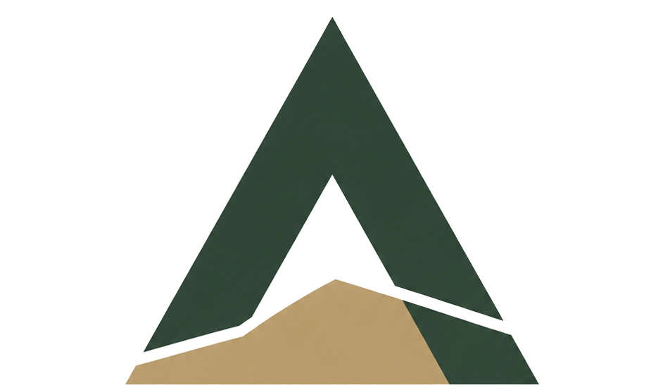

Dokumentacija za istraživanje mineralnih sirovina
Priprema podloga za istraživanje, planiranje istražnih radova i procjena podataka potrebnih za daljnju izradu elaborata o rezervama.

Projektiranje u rudarstvu i geološka dokumentacija
Stratik d.o.o. pruža stručne usluge u području rudarstva, geologije i izrade tehničke dokumentacije za istraživanje, utvrđivanje rezervi i eksploataciju mineralnih sirovina.
Od početne geološke procjene do elaborata o rezervama i rudarskih projekata, svakom projektu pristupamo analitično, odgovorno i u skladu s važećim zakonskim i stručnim zahtjevima.
Pouzdana dokumentacija. Stručan pristup. Jasna rješenja.
Stratik d.o.o. specijaliziran je za stručnu podršku u postupcima vezanim uz mineralne sirovine, istražne prostore i eksploatacijska polja.
Naš cilj je da dokumentacija bude ne samo formalno ispravna, nego i praktično korisna za daljnje projektiranje, odlučivanje, komunikaciju s nadležnim tijelima i provedbu postupaka.
Usluge
Izrađujemo stručne podloge za planiranje, potvrdu rezervi, projektiranje i razvoj projekata mineralnih sirovina.
Priprema podloga za istraživanje, planiranje istražnih radova i procjena podataka potrebnih za daljnju izradu elaborata o rezervama.
Rudarski projekti za istraživanje, probnu eksploataciju, eksploataciju mineralnih sirovina i tehničku sanaciju prostora.
Izrada elaborata za potvrđivanje količine i kakvoće mineralne sirovine, proračun rezervi i tehničko-ekonomsku ocjenu eksploatacije.
Sistematizacija i interpretacija bušotina, raskopa, profila, laboratorijskih ispitivanja i dostupne dokumentacije.
IG kartiranje tunelskih iskopa, IG kartiranje zasijeka i stručna geološka podrška pri infrastrukturnim zahvatima.
Podrška kroz faze istraživanja, potvrde rezervi, eksploatacijskog polja, rudarskog projekta i koncesijskih postupaka.
Naš pristup
Svaka odluka u rudarstvu mora biti utemeljena na provjerenim podacima, pravilnoj interpretaciji i dokumentaciji koja može izdržati stručnu provjeru.
Pregled postojećih podataka, ranijih elaborata, karata, dozvola i istražnih radova.
Utvrđujemo što je poznato, što nedostaje i koji su koraci potrebni za nastavak.
Podatke sistematiziramo, interpretiramo i povezujemo u stručnu cjelinu.
Izrađujemo elaborat, projekt ili stručnu podlogu u skladu s propisima i pravilima struke.
Po potrebi pružamo pojašnjenja, dopune i tehničku podršku tijekom pregleda dokumentacije.
Zašto Stratik d.o.o.
Naš cilj nije samo izraditi dokument, nego pripremiti stručnu podlogu koja je jasna, provjerljiva i korisna u stvarnom postupku.
Područja rada
Radimo na projektima vezanima uz različite mineralne sirovine koje se pojavljuju u postupcima istraživanja i eksploatacije u Republici Hrvatskoj.
Svako ležište promatramo individualno, uzimajući u obzir geološku građu, kakvoću sirovine, mogućnost eksploatacije i zahtjeve važećih propisa.
O nama
Stratik d.o.o. osnovan je s ciljem pružanja stručnih, pouzdanih i jasno strukturiranih usluga u području rudarstva i geologije.
Tvrtka je usmjerena na izradu dokumentacije za mineralne sirovine, s posebnim naglaskom na elaborate o rezervama, rudarske projekte i stručne geološke podloge.
Bilo da se radi o novom istražnom prostoru, postojećem eksploatacijskom polju, dodatnom istraživanju ili ažuriranju dokumentacije, Stratik d.o.o. pruža podršku od početne analize do završne stručne dokumentacije.
Kontakt
Javite nam se s osnovnim informacijama o lokaciji, vrsti mineralne sirovine i postojećoj dokumentaciji. Nakon početnog pregleda možemo predložiti daljnje korake i procijeniti koju je dokumentaciju potrebno izraditi ili dopuniti.
Projektni upit